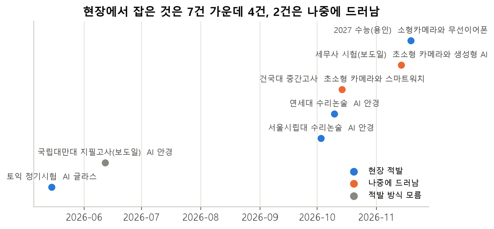
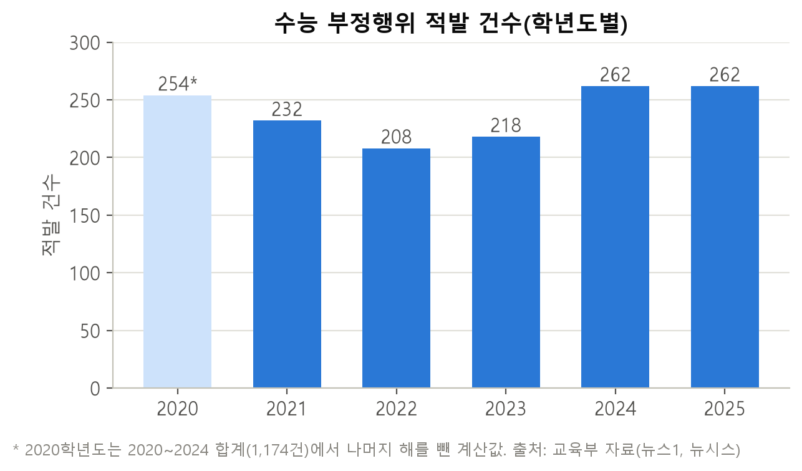
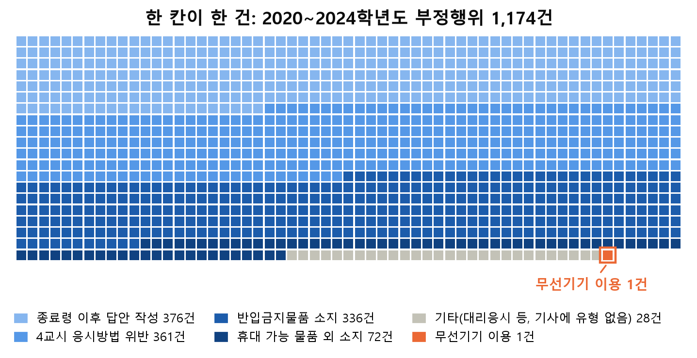
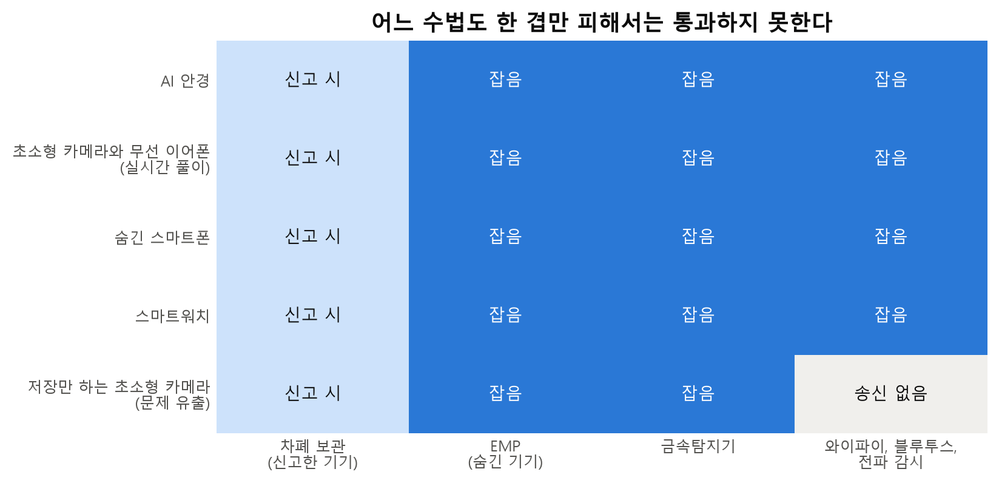
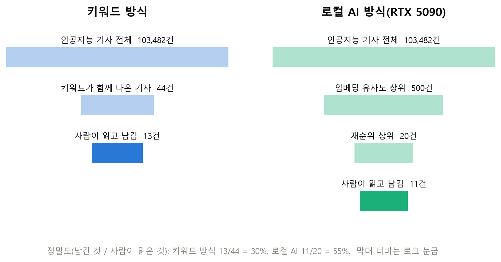

1 / 1,174
2020~2024학년도 수능 부정행위 가운데 무선기기를 써서 잡힌 건수
98명
2027학년도 수능 당일(2026-11-19) 전자기기 관련 적발, 교육부 브리핑 속보
4 / 7
2026년 AI 부정행위 사례 가운데 현장에서 잡은 건수
문제: 지금 규칙으로는 잘 안 잡힌다




중고교 교원 2,716명 설문에서 82.3%가 지금 감독 절차로는 AI 스마트안경을 알아보기 어렵다고 답했고, 64.4%는 민원이나 법적 분쟁을 걱정했습니다. 온라인에서는 단추 카메라, AI 풀이, 초소형 이어폰을 묶은 세트가 약 11만 원에 팔린다는 보도도 있습니다(실제 사용은 확인되지 않음).
해결 방안: 학교 입구에서 서로 다른 검사 네 가지를 겹친다
시험실 안에서 기기를 쫓지 않고, 학교 입구에서 들어오기 전에 거릅니다. 한 가지 검사는 피할 수 있어도 원리가 다른 네 가지를 한꺼번에 피하기는 어렵습니다.
- 1
EMP
소지품을 꺼내 한 번, 몸에 한 번 터뜨립니다. 신고한 휴대전화는 차폐 파우치에 먼저 넣습니다. 심박조율기, 인공와우, 인슐린 펌프를 쓰는 학생은 미리 신청을 받고 당일 진료확인서로 따로 통과합니다.
- 2
전파 탐지
영상이나 답을 밖으로 주고받는 송신 기기를 찾습니다.
- 3
금속 탐지
전원이 꺼져 있거나 저장만 하는 기기도 배터리와 회로 때문에 걸립니다.
- 4
와이파이와 블루투스 감시
시험 날 아침 평소 신호를 기준선으로 먼저 배우고, 그 뒤 새로 켜지는 기기만 경보합니다.

금지 물품을 숨겨 왔다가 EMP에 망가졌다면 배상을 요구할 근거가 약합니다. 수능 규정이 전자기기 반입을 이미 막고 있기 때문입니다.
근거: 계산과 측정으로 정한 조건
EMP는 차폐 부스 안에서

남은 과제는 몸 단계입니다. 전자기기를 망가뜨리는 세기(수 kV/m)는 ICNIRP 1998의 1 GHz 펄스 순간 최대 1,392 V/m의 2.2~7.2배라, 사람에게 안전한 세기로 기기만 망가뜨릴 수 있는지 측정으로 확인해야 합니다.
무선 감시는 기준선부터


비용
80~120만 원
시험장 한 곳. 금속탐지기 2대 20~40만 원, 전파탐지기 1대 60~80만 원, 무선 감시는 있는 노트북이나 휴대폰으로 합니다.
10.5~15.7억 원
전국 시험장 1,312곳. EMP 부스와 차폐 파우치는 값을 아직 찾지 못해 빠져 있습니다.
자료와 정제
| 자료 | 받은 곳 | 정제 |
|---|---|---|
| 수능 응시현황 | 공공데이터포털 15098904, 한국교육과정평가원 | cp949 파일을 UTF-8로 옮기고 학년도, 지원, 응시, 응시율 열만 남김 |
| 인공지능 기사 103,482건(2024년 1~6월) | 공공데이터포털 15155969, 한국언론진흥재단 BIGKinds | 키워드 방식과 로컬 AI 방식으로 시험 부정행위 기사를 골라 견줌 |
| 부정행위 건수, 사례, 설문, 장비 가격, 기준값 표 10개 | 교육부 발표를 전한 기사, 법령, ICNIRP 1998, HPEM 시험 문헌 | 숫자를 손으로 옮기고 행마다 출처 주소를 담. 원문 기사에서 확인되지 않은 값은 뺌 |
| 무선 기준선 | 이 PC로 직접 잼(2026-11-19, 10분 40회) | 기기 주소와 이름은 해시로만 남기고, 신호 %를 dBm 근사값으로 바꿈 |

확인하지 못해 뺀 값: 검색 요약에 나온 "2022~2026학년도 무선기기 이용 적발 0건, 반입금지물품 65건에서 84건으로 증가"는 원문 기사 다섯 곳에서 찾지 못해 쓰지 않았습니다.
AI 활용
| 도구 | 쓴 곳 |
|---|---|
| ChatGPT | 처음 아이디어를 다듬고 반론을 받아 봄 |
| Claude (Claude Code) | 공공데이터와 기사 수치를 모으고 원문과 대조함. 분석 코드와 그림을 씀 |
| 임베딩 모델 snowflake-arctic-embed-l-v2.0-ko | 인공지능 기사 103,482건을 뜻으로 찾음. 이 PC의 GPU로 74초 |
| 재순위 모델 Qwen3-Reranker-0.6B | 뜻이 가까운 500건이 시험 부정행위 기사인지 판정함 |
| Python (pandas, matplotlib) | 표 15개를 정리하고 그림 10장을 그림 |
재순위 모델에 준 지시문(코드 그대로)
이 기사가 시험(수능, 대입, 자격시험, 대학 시험, 토익 등)에서 일어나는 부정행위, 커닝, 대리시험이나 그것을 감독하고 막는 일을 주로 다루는지 판단한다. 시험을 만드는 AI, 기업 감사, 금융 부정은 해당하지 않는다.
AI의 답을 사람이 바꾼 네 번
AI: EMP는 법, 배상, 안전 문제로 어렵다.
사람: 의료기기는 사전 신청, 장소는 시험실이 아니라 입구, 금지 기기는 배상 근거가 약하다는 점을 들어 반박함. 대신 범위를 계산해 차폐 부스를 더함.
AI: AI 합성물 범죄 통계를 분석 자료로 가져옴.
사람: 시험 부정행위와 다른 문제라 뺌.
AI: 검색 요약의 "무선 적발 0건, 65건에서 84건으로 증가"를 씀.
사람: 원문 기사에서 찾지 못해 뺌. 확인된 1건만 씀.
AI: 재순위 점수 0.5를 넘는 기사만 고르니 2건만 남음.
사람: 문턱 대신 순위로 바꾸고 위 20건을 사람이 읽음.
내려받기
- 정리한 표 15개와 무선 기준선(zip, 73KB)
- 자료 목록과 정제 과정(SOURCES.md)
- 분석 코드
- download_portal.py: 공공데이터포털 파일 내려받기
- filter_news.py: 키워드 방식 뉴스 정제
- gpu_news.py: 로컬 AI 방식 뉴스 정제(임베딩, 재순위)
- build_tables.py: 기사 수치 표와 출처
- analysis.py: 분석과 그림 10장
- rf_scan.py: 와이파이, 블루투스 기준선 측정
뉴스 원자료(305MB)는 크기 때문에 올리지 않았습니다. 공공데이터포털 15155969에서 받을 수 있습니다.
한계와 다음 실험
- EMP 거리 계산은 세기가 거리에 반비례한다는 가정입니다. 실제 부스의 감쇠는 측정해야 합니다.
- 휴대폰 핫스팟(와이파이로 영상을 보내는 초소형 카메라와 같은 방식)과 블루투스 이어폰으로 거리별 탐지율을 재고, 호일과 전원 뺀 전자레인지로 차폐 감쇠를 잴 계획입니다. 순서는 정해 두었습니다.
- 2027학년도 수능 수치는 당일 브리핑 기준이라 최종 집계와 다를 수 있습니다.